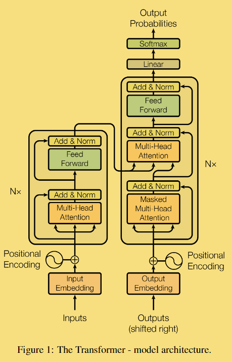
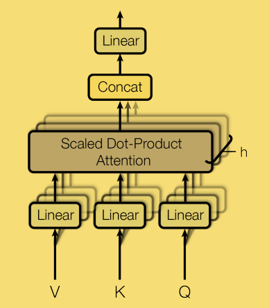
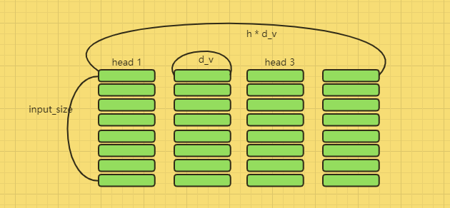
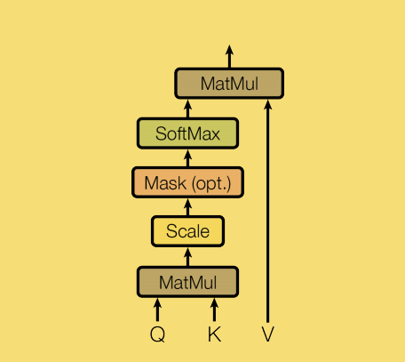
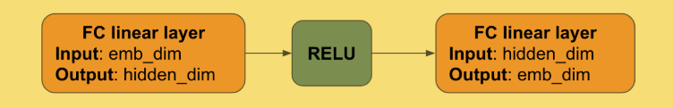
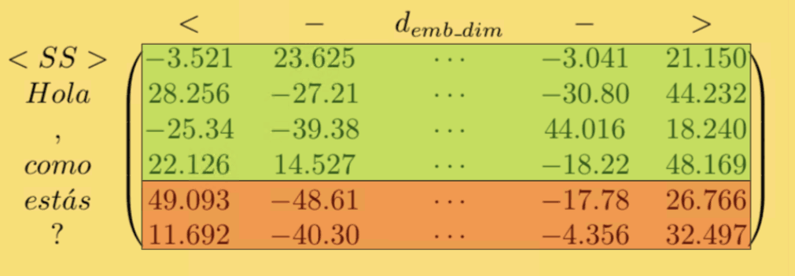
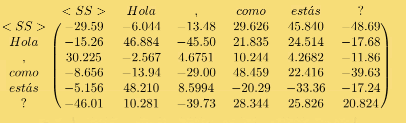
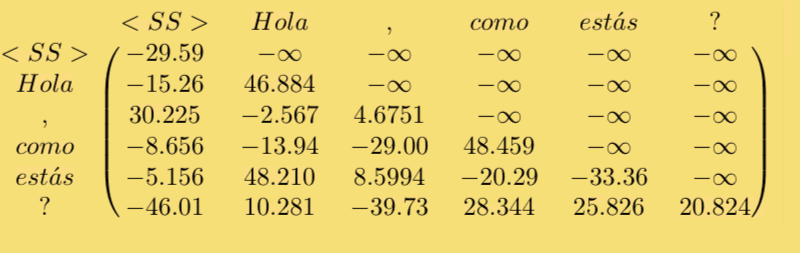
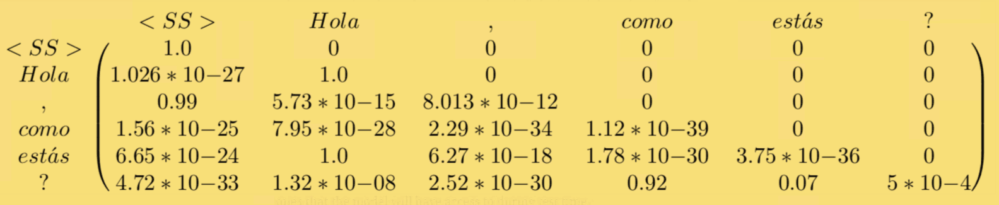
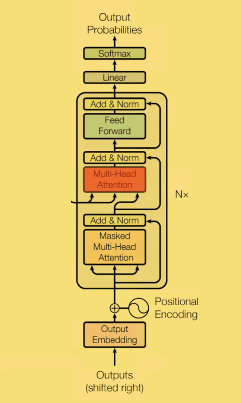

Transformer
Model Architecture

Encoder
先定义符号：
emb_dim：embedding的维度
input_length: 输入序列的长度（不同长度的序列通过填充来使得其长度都相同）
hidden_dim:forward_feedback中隐藏层的长度
vocab_size:词汇表中单词的数量，总的数量
数据流
1.输入（input_length) (*emb_size)
2.然后添加位置信息 得到（input_length) (*emb_size)
3.通过N个Encoder编码块得到 （input_length) (*emb_size)
note：N块Encoder的输入和输出尺寸维度是相同的，所以可以把上一个Encoder的输出，作为下一个Encoder的输入。
note：每一个Encoder不会共享权重
Input_Embedding
- Word_Embedding
比如一句话：“你好，你吃饭了吗？”
step1 ：”你好，你吃饭了吗“ -> [“你好”，”,” , “你”，”吃饭”, “了”，”吗”，”?”]
step2: [“你好”，”,” , “你”，”吃饭”, “了”，”吗”，”?”] ->[2, 4, 5, 12, 35, 5, 34, 99] 在语料中的index
step3: 2 -> E[2] = [123.4, 0.32, ……, 32.1,32]
note：这些向量也是参数，使用反向传播进行优化/
step4：把每一个向量堆叠起来，就得到个维度为（input_length) (*emb_size)的矩阵
step5：每一句话的长度不一样，所以使用标记来填充长度，[
, , “你”，”吃饭”， “了”，”吗”，”?”] 这里的input_length为7，
-> [999] = [213, 4.23, 413, ….]
- Positional_Encoding
作者是用预定的正弦函数来对位置信息进行编码其中i作为序列号（第几个单词）j作为embedding的位置
最后的结果：X = Z + P
X作为第一个Encoder的输入 （input_length) (*emb_size)
Multi-Head Attention

（input_length）x（h * d_v）。然后，将应用具有尺寸（h * d_v）x（emb_dim）的权重矩阵W’的线性层，从而导致尺寸的最终结果 *（input_length）x（emb_dim）
Multi-Head，就是只多做几次同样的事情，同时参数不共享，然后把结果拼接

其中 Q K V 就是三个输入的矩阵，每一个头部都是由给出的三个不同 K Q V投影表示
输入矩阵X并分别将其与上述权重矩阵一起投影，得到我们的K Q V
note：在论文中 d_k = d_v = emb_dim / h
得到K Q V 之后我们就可以使用其来计算Scaled Dot-Product Attention：

我们来看看 Attention 到底做了些什么
首先我们看
此矩阵相乘表示了什么东西？如果我们把其中的 v_i 和 u_j 单独拿出来看他们的点乘可以看作：
因此，这是对u_i和v_j的方向有多相似以及它们的长度有多大的度量（方向最接近，长度越大，点积越大）。
在该乘法之后，为了缩放目的，矩阵被元素划分为 d_k 的平方根。论文里对于 d_k 的作用这么来解释：d_k 很大的时候，点积得到的结果维度很大，使得结果处于 softmax 函数梯度很小的区域。这时候除以一个缩放因子，可以一定程度上减缓这种情况。
最后得到结果 如下：
结果是数字在0和1之间的行总和为1。并且为 input_size * input_size 的大小。最后，结果乘以 V（input_size * d_v ）可以这样理解，得到的方形的矩阵，可以作为 V 的权重参数最终得到 input_size * d_v 的 head
此时就做到了单词和其他所有单词产生了特定的关系。 Multi-Head Attention就是做 h 次这样的处理，就会捕捉到 h 次不同的关系。然后把全部的 关系 串连到一起。
Feed-Forward Network

其中 W_1 和 W_2 分别是 （emb_dim）x（d_F） 和 （d_F）x（emb_dim） 矩阵
最后输出为 （input_length）x（emb_dim）的矩阵
Dropout, Add & Norm
Decoder
这里相较与 Encoder 多了：
target input:目标输入
数据流
Encoder 数据出来， input_size * emb_dim
masked之后 target_length * emb_dim
再输入把 Encoder 的数据传给和masked数据一起传入N个 Decoder ，target_length * emb_dim
最后通过fully connected layer 和 row-wise softmax 输出 target * vocab_size
note：每一个Block不会共享权重
输入与 Encoder 完全相同，与encoder主要的不同在于，target sequence 将左移一位，前面加上标志
[“Hola”, “, “, “como”, “estás”, “?”]→[“
”, “Hola”, “, “, “como”, “estás”, “?”]
Decode
- Test Time
计算embedding representation
使用开始token，比如
作为序列的第一个target。然后模型的输出作为下一个token 把最后一个预测的标记添加到序列之中，并使用他生成下一个新的预测
一直重复步骤3. 知道遇到表示结束的token 比如
- Training Time
按照我们之前的示例，我们将输入：
[‘
‘，’Hola’，’，’，’como’，’estas’，’？’]
预期的预测是：
[‘Hola’，’，’，’como’，’estas’，’？’，’
‘]
由于在训练的时候，全部的信息都是已经知道的。我们应该防止通过已经看到的单词来预测单词。例如，它可能会在’como’的右侧看到’estas ‘并用它来预测’estas’。
让我们举一个例子来说明这一点。鉴于：
[‘
我们将如上所述将其转换为矩阵并添加位置编码。这会产生一个矩阵：


如果要预测estas，我们能够信息能够交互的区域就如上图所示。
Masked Multi-Head Attention
与Multi-Head Attention机制完全相同，但为我们的输入添加maske。而且需要maske的唯一的block是解码器中的第一块，修改将在计算之后。
得到：

maske步骤只是将矩阵的严格上三角形部分中的所有条目设置为负无穷大。

其余部分与编码器Multi-Head Attention描述的相同。
设置为负无穷之后，通过softmax函数。其后面需要忽略的token的注意力将变为0，忽略了后面的单词。当将此矩阵与V_i相乘时，将用于预测下一个单词的唯一元素是其右侧的元素，即模型在测试时间内可以访问的元素。
输出将是维度矩阵 target_length *emb_dim 因为计算它的序列具有 target_length 的序列长度
Multi-Head Attention — Encoder output and target

与之前 Multi-Head Attention 层中那样从X中导出Q_i，K_i和V_i不同，而是使用编码器的最终输出E（所有编码器块的最终结果）和解码器的前一层输出D（经过Dropout， Add＆Norm 图层后屏蔽 的Multi-Head Attention）。
让我们首先澄清这些输入的形状及其代表的含义：
- E，编码输入序列，是维度（input_length）x（emb_dim）的矩阵，其通过经过6个编码器块编码输入令牌之间的关系。
- D，经过Add＆Norm后屏蔽的Multi-Head Attention的输出是维度矩阵 target_length* emb_dim
现在让我们深入了解如何处理这些矩阵。我们将使用与以前相同尺寸的加权矩阵：
但是这次投影生成 Q_i 将使用D（目标信息）完成，而生成K和V的投影将使用E（输入信息）创建。
同样由多个head，串联之后使用的矩阵W_0将具有与编码器块中使用的尺寸（d_v * h）x（emb_dim）一样的尺寸。其他的与编码器中的 Multi-Head Attention 完全相同。
Linear and Softmax
来自最后一个解码器块的最后一个 Add＆Norm 层的输出是维度 （target_length）x（emb_dim）的矩阵X
并在每个结果行中应用Softmax
参考
1.Dissecting BERT Appendix: The Decoder)
2.Attention Is All You Need; Vaswani et al., 2017.
3.The Annotated Transformer; Alexander Rush, Vincent Nguyen and Guillaume Klein.